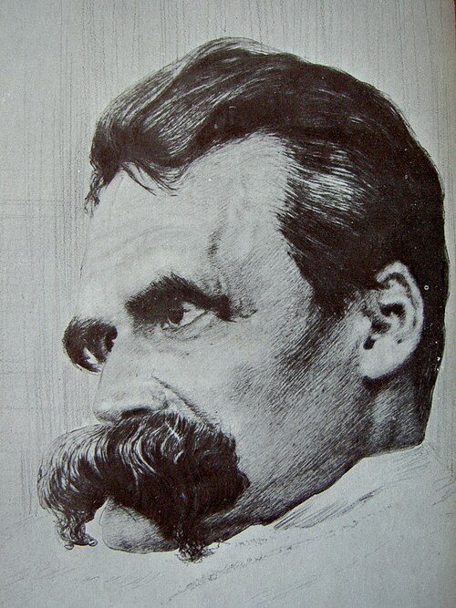

Карта заброшек
Места, где бездна смотрит на тебя в ответ. Не ходи в одиночку.
Визуал на пути из бездны
Ницше

«Если долго смотреть в бездну, бездна начнёт смотреть в тебя» — и, судя по нашей карте, бездна уже смотрит.
Мы добавили Ницше сюда, потому что он единственный, кто не испугался заброшек и не спросил, где ближайший бар.
«Бездна — это тоже место на карте.»